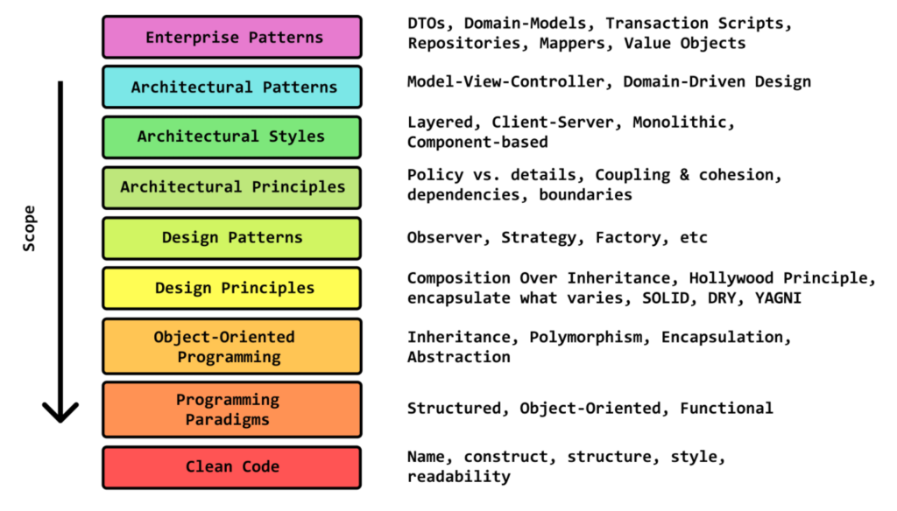

RoadMap, por onde começar?
Quais conhecimentos eu deveria obter para me tornar desenvolvedor de qualidade?
Para essa resposta nasce uma outra pergunta.
Como aprender design e arquitetura de software?
Design e arquitetura de software é um tópico gigantesco que procura entender como:
- Escreva um código que seja fácil de alterar
- Escreva código que seja fácil de manter
- Escreva um código que seja fácil de testar
- Arquitetar um sistema para atender às necessidades de seus usuários
Mesmo que saibamos escrever códigos que funcionam muito bem, o maior desafio é descobrir como escrever código que facilite as mudança evolutivas do sistema.
Mas, por onde começar?
Abaixo está o RoadMap para design e arquitetura de software que seguiremos durante o decorrer do nosso aprendizado.
Etapas de conhecimento: 
RoadMap Software Design & Architecture
O roteiro que seguiremos teram 10 grandes etapas que terá o objetivo de orientar o crescimento contínuo para que possamos aprender a projetar sistemas limpos, escaláveis e com qualidade.
Vamos para a primeira etapa?
Dictionary
RoadMap: roteiro Pronúncia: rowd-mep